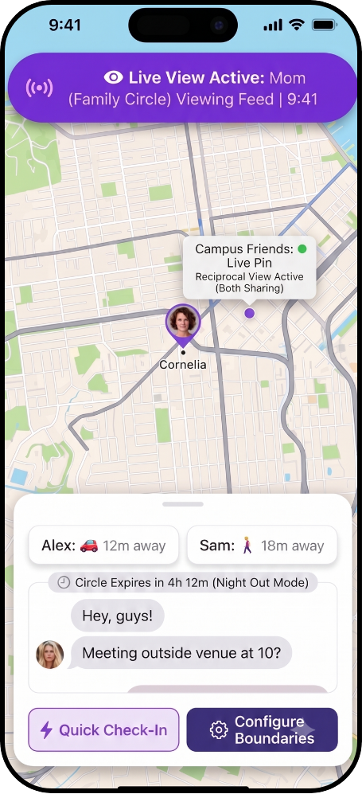
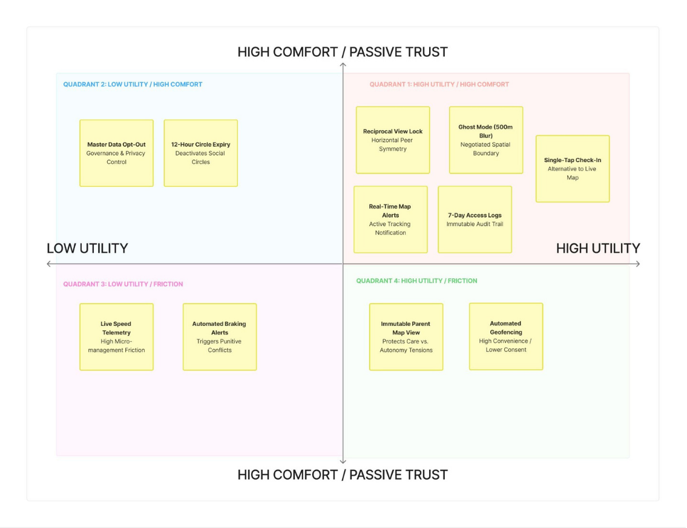
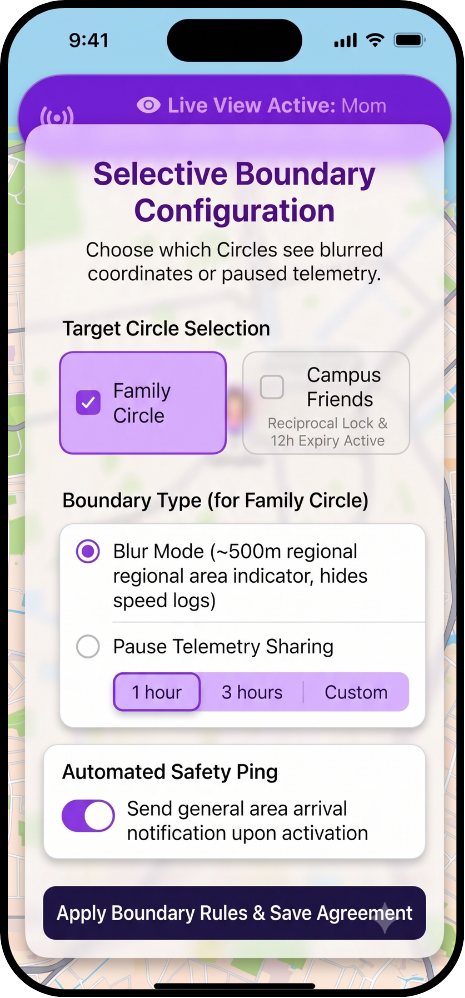
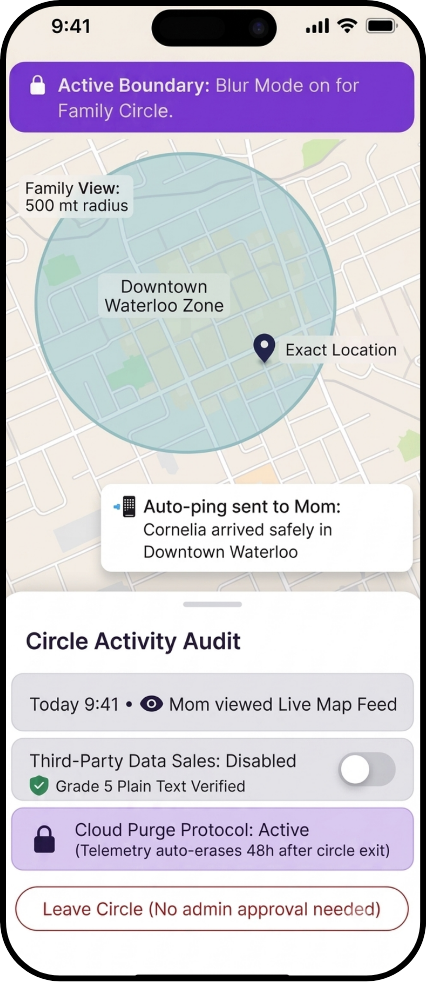

A term-long Value Sensitive Design case study reimagining family and peer location-sharing apps, moving away from surveillance defaults toward an interface built on reciprocity, consent, and negotiated trust.

Life360 has historically functioned as a unilateral, permanent surveillance tool. My design intervention centers around a clear moment of conflict where teenager autonomy clashes with passive, top-down parental and peer tracking.
By looking at dark patterns in user experience design, such as the work by Chris Nodder, alongside affordance theory from Jacquelyn Davis and James Chouinard, this case study shows how frictionless tracking interfaces quietly push users into giving up their privacy for corporate data collection and parental peace of mind.
To evolve the initial prototype into the final design, I ran a structured feedback process with two key groups: older teenagers and new drivers aged 16 to 19, alongside peer friend groups.
Total participants in scenario walkthroughs, including seven older teens and four campus peers.
Of peer participants turned down one-sided tracking, insisting on reciprocal view locks.
Plain text threshold used for privacy audit drawers based on Shariat and Saucier's framework.
"I really like the blur mode for parents, but how do I know my friends are actually sharing their locations? If I'm sharing my exact location for a night out, there needs to be an obvious sign that it's being reciprocated, not some one-sided type of location sharing."
— Non-GBDA Peer Review Participant (Stakeholder Group 2)Hearing this direct feedback from users made it clear that reciprocity and transparency could not just be hidden away in background settings menus.

Figure 1: Figma Platform Mechanics Prioritization Framework Mapping feature permissions across utility and comfort axes to prioritize reciprocal view locks and cloud purge protocols.
The final prototype translates core ethical values into concrete interface elements using visual callouts:
Features a soft green status dot with the text "Reciprocal View Active (Both Sharing)", a four-hour night-out mode expiry pill, and a quick check-in arrival button.

Replaces one-sided parental commands with a collaborative action button that reads "Apply Boundary Rules & Save Agreement".

Includes the Cloud Purge Protocol card, which auto-erases telemetry data after 48 hours, along with a Grade 5 Plain Text Verified badge.
"My core realization in GBDA 306 was recognizing that frictionless UX is frequently a dark pattern. Having used Life360 in high school, I never questioned its passive surveillance; our project taught me that as designers, we are responsible for the hidden power structures embedded in our code."
Connecting Marcus Schultz-Bergin's insights on valuing with Davis and Chouinard's affordance framework proved that technology is never neutral. Unilateral round-the-clock location tracking prioritizes corporate data collection over human dignity. True ethical design calls for introducing intentional friction, such as mandatory re-consent prompts, live view status banners, and symmetric peer locks, to turn unthinking surveillance into an active, negotiated human contract.
Reflecting on Sasha Costanza-Chock's principles of design justice, my initial user research had an accidental middle-class bias because it assumed everyone has unlimited cell data and a modern smartphone. In future iterations, I would build an offline SMS fallback system so that safety pings do not require expensive data plans, expand testing to include low-literacy and neurodivergent users with tactile haptic alerts, and design for youth living outside nuclear family structures.
The most valuable takeaway I will bring into my future career as a UX designer is Ibo van de Poel's Value Hierarchy framework. In the industry, abstract concepts like trust or privacy often stay as empty marketing slogans unless they are translated systematically.
By connecting high-level ethical goals down to specific design requirements, like putting persistent top-bar status banners on the map view, this framework helps designers make value tensions clear to teams and clients. Moving forward, I want to build digital products that put public interest, data sovereignty, and human autonomy ahead of corporate profit.